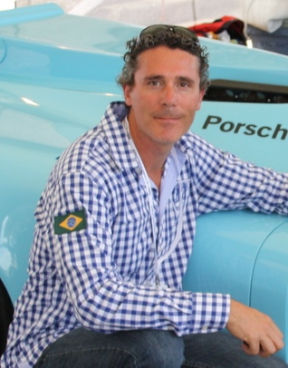

Qui suis-je ?
Passionné depuis toujours par la nature sauvage...

Passionné depuis toujours par la nature sauvage...
Pour voyager avec un minimum de poids, j’utilise...

Passionné depuis toujours par la nature sauvage, j’ai très vite aimé photographier les animaux dans leurs environnements. J’ai participé à diverses expéditions au Spitzberg ou j’ai pu photographier de nombreux ours polaires ainsi que d’autres animaux du grand nord.
Passionné également de sports automobiles des années 1970 à 1990, Je me rends régulièrement sur les plus grands circuits français lors de manifestations sportives de véhicules anciens.
J’ai à ce sujet publié en 2011 un livre sur la porsche 944 qui m’a bouleversé dès sa présentation en septembre 1981.
Joris G. alias “ Le Chat Photographe9 ”
Pour voyager avec un minimum de poids, j’utilise uniquement 3 objectifs photos, 2 boitiers, et un sac à dos capable d’emporter avec cela, mes filtres polarisants.
Pourquoi 2 boitiers:
Les boitiers numériques modernes récupèrent énormément de poussières si on les ouvre trop souvent. Sur le terrain, il est important de changer le moins possible d’objectif. Je fixe mon objectif grand angle sur mon boitier Canon 5DS au format 24x36 et je place en fonction des photographies animalières que j’ai choisies de faire, soit mon télé-objectif Canon 400mm, soit mon télé-objectif 70-200mm sur mon boitier Canon 7D mark II, un boitier adapté à la photographie sportive.